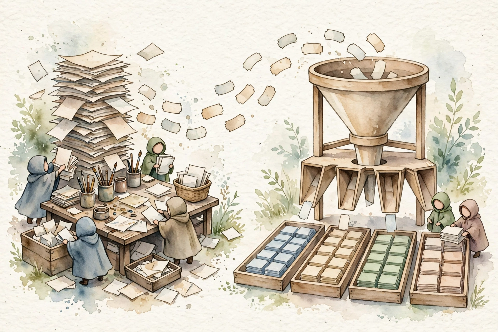
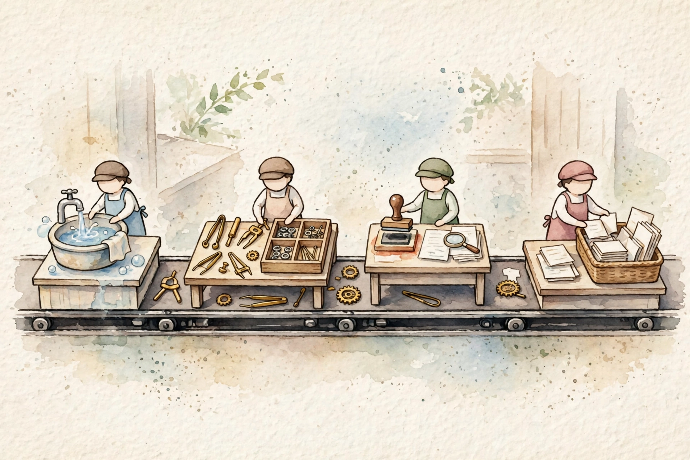
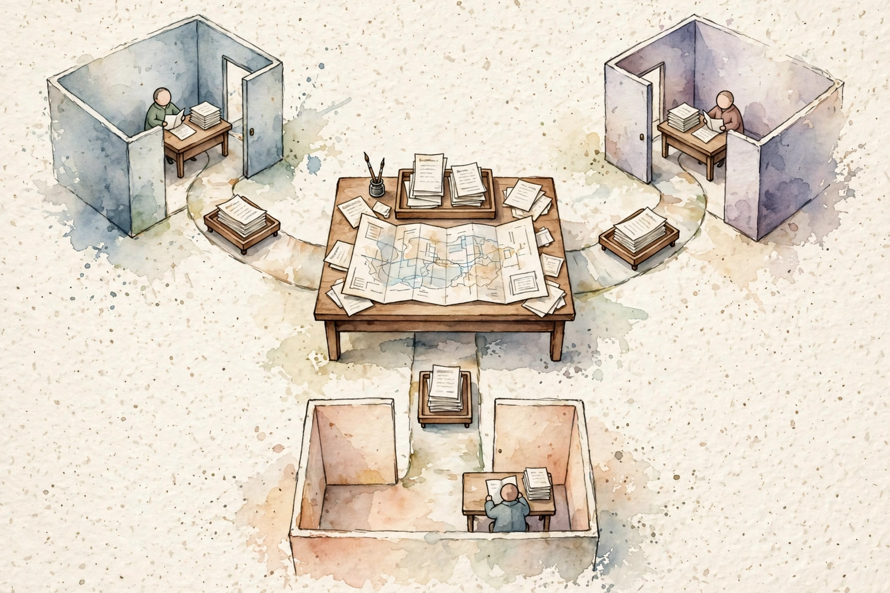
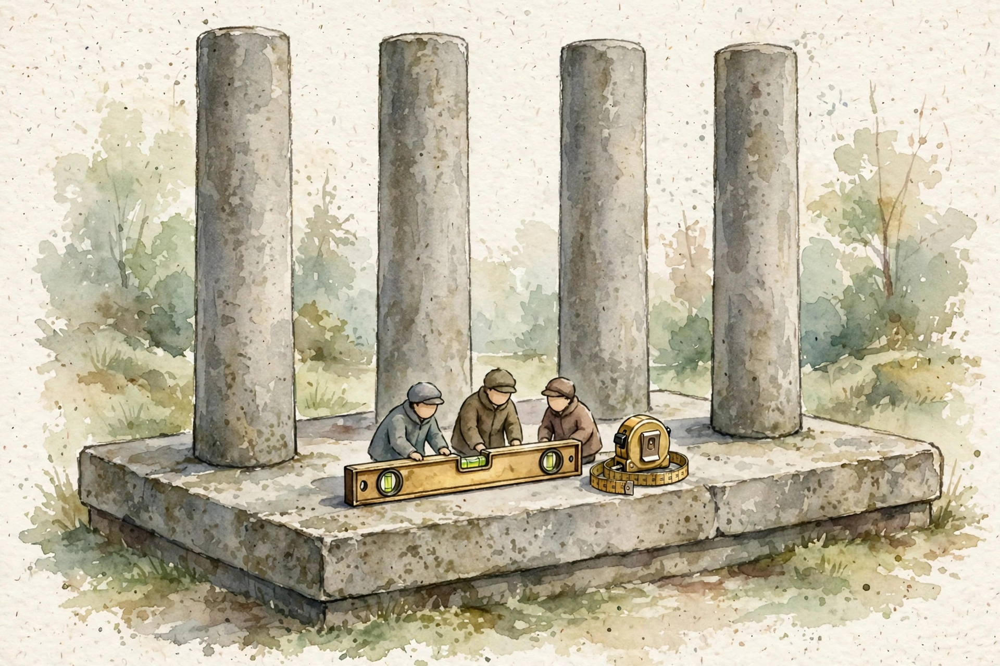

Companion · CCAR-P Domain 1 · Solution Design and Architecture
Domain 1 tests one skill above all. Turn a business problem into the narrowest Claude system that meets a stated limit, then defend each choice with a number.
SOURCE / INTERPRETATION: HOW TO READ THE TAGS
From the lesson SOURCE: the idea, and every number beside it, comes from the cited section of the source. The phrasing is the companion's.
Illustration INTERPRETATION: invented by the companion: an analogy, a toy with made-up values, or a what-if. Never source content.
companion INTERPRETATION: companion voice: the idea above the tag is from the source. The generalization below it is the companion's.
From the lesson Unit 1 intro
Domain 1 holds 17 percent of the CCAR-P exam. The source counts about 11 items for the domain. Items reward the narrowest design that meets the stated limit. Items punish extra machinery.
Real projects start with a vague sentence. A leader asks if Claude can fix a support backlog. The first job is questions, not architecture. Three facts hide in the ask. The pain. The people the pain hits. The limits the design must respect. Ask until you can write all three down. The answers become the constraints. The constraints do half the design work before any pattern choice.
Translation turns a business pain into a system shape. Stakeholders speak in outcomes. Outcomes are money, time, and error rates. Architects speak in mechanisms. Mechanisms are inputs, model calls, validators, and loops. The funnel runs in order. Pain becomes a number. The number becomes a decision. The decision becomes a pattern. The pattern gets a test against the number. One rule fixes the gap. Write the success number before you draw the architecture.
Step one watches the work. Repetition, backlogs, and errors with a price mark the costly loop. Step two sets the success number. A success number has three parts. The baseline. The target. The instrument that measures the target. Step three maps decision points. A decision point is a moment where a human reads messy input and applies judgment. Step four tests each task for four conditions. The input is messy language or data. No rule fits an if statement. The task needs judgment. A wrong answer has a bounded and checkable cost. A verifier must exist.
Three shapes rule the model out. Exact recall is a search and index job. A guarantee is a policy gate in code. A cheap high volume transform is a script. One principle covers all three. Put plain code where the task is plain. Put the model where the task needs judgment. Every model call must defend one decision point. A call that defends no decision point gets a cut.
The source works one case in full. A team routes 600 tickets per day. A human spends 2 minutes on each ticket. The misroute rate is 18 percent. Each misroute costs 8 minutes of rework. The target is 92 percent routing accuracy and under 30 seconds of human time per ticket. The team measures on a weekly sample of 200 tickets. At 94 percent accuracy the misroute rate falls to 6 percent. The case saves 576 minutes per day. The saving is 9.6 hours per day and about 62,000 dollars per year. Model cost is about 10 to 15 dollars per day.

From the lesson Unit 2 intro
Every Claude system shares four stages. Input prepares the raw material. Processing does the judgment work. Output checks and delivers the result. Feedback loops carry results back into the system. The model call is the smallest part of the code. The model call is the largest part of the risk.
Input, process, and output form the request path. Latency and cost budgets sit on this path. The return path is the learn loop. Production traffic, user fixes, and eval results flow back. A system with no return path is a prototype. A system with a return path is a product.
The input stage has four jobs in order. Capture takes data in with context. Validate checks size, type, and shape before the model sees the data. Normalize puts formats into one form. Redact strips secrets and personal data the model does not need. The model cannot leak data the model never saw. Most input work is code, not model calls. Code is exact, cheap, and open to tests.
Processing has three parts. Model calls run in one of the Unit 3 patterns. Tools act as hands with narrow schemas. State holds what persists across calls. Each call is stateless. The prompt carries all context for the call. Each call pays for the full input each time. A 10 turn chat re-sends the early turns on every call. Long state has a direct cost per turn.
Raw model text must never trigger a real action. The output stage checks the result against a schema. The stage checks policy. The stage checks confidence. Code formats the result for the reader or the next system. High stakes actions pass a human approval gate. Low stakes actions that a team can reverse may auto-apply with an audit trail. The exam fault is an agent that acts on raw output. The fix is a check, an allowlist, or a human gate.
Four loops fight drift, each on a clock. The product loop runs in hours to days. User signals feed prompt tweaks and route rules. The eval loop runs each week. A golden set re-runs on every prompt or model change. The data loop runs each month or quarter. Production examples become better retrieval data and examples. The human loop samples output on a steady basis. Humans catch tone faults and new failure shapes that metrics miss.
The source works one latency budget. A support answer system has a 5 second p95 SLA. Input takes 600 milliseconds. Processing takes 3,000 milliseconds. Output takes 400 milliseconds. The total is 4,000 milliseconds. The design keeps 1,000 milliseconds of headroom. Headroom absorbs slow retrieval and model variance. Cost per query is about 0.01 to 0.02 dollars.
Latency budget per request
The worked support answer budget from Unit 2, in milliseconds
| Item | Value |
|---|---|
| Input stage | 600 |
| Processing stage | 3000 |
| Output stage | 400 |
Source: 01-solution-design-architecture.html, Unit 2, section 2.5. Total 4,000 ms against a 5,000 ms p95 SLA. Cost per query about 0.01 to 0.02 dollars at list prices in the source.

From the lesson Unit 3 intro
One question picks the pattern family. Who controls the path, plain code or the model? Workflows fix the path in code. Agents let the model plan the path. The augmented LLM is the atom both sides use. Source credit in the lesson goes to the Anthropic essay on agents. The core advice is plain. Start with the simplest pattern that can work.
Picture a slider. One end holds workflows. Code defines the path and the model works the steps. The other end holds agents. The model plans the path and acts with tools. Most exam traps start at the complex end. The credited design starts simple and adds parts only with proof of gain.
An augmented LLM is one model call with three additions. Retrieval looks up facts. Tools call APIs and run code. Memory reads and writes notes across turns. The model still runs once per request. A task that fits one augmented call needs no larger pattern. Each larger pattern adds calls, latency, cost, and failure modes.
Five workflow patterns cover most tasks. Prompt chaining runs fixed steps in sequence with a check at each handoff. Routing classifies input and sends each class to a specialist. Parallel work splits a task into parts that run at once, as sections or as votes. Orchestrator-workers pairs one planner with focused workers. Evaluator-optimizer loops a maker and a checker until output passes. Workflows win on three axes. Predictability. Fixed call cost. Fault location.
The source prices one route case. Traffic is 10,000 queries per day at 2,000 input tokens per query. The big model costs 3 dollars per million input tokens. The small model costs 0.25 dollars per million. A route sends 80 percent to the small model and 20 percent to the big model. Total cost is 16 dollars per day. The all big route costs 60 dollars per day.
An agent is a model in a loop. The agent gathers context, acts with tools, reads results, and repeats. No one fixed the steps in advance. Three design problems rule agent work. Stop conditions tell the agent the task is done. Cost varies per task, so budgets cap the spend. Faults hide in long traces, so full trace logs are a must. An agent fits a task with steps no one can list in advance.
The rule runs as questions. Steps known in advance points to a workflow. A cheap check between steps supports chaining or an evaluator loop. Varied input classes take routing. Independent parts point to parallel work. A task too big for one context points to orchestrator-workers. A path no one can know in advance points to an agent with caps, gates, and traces. Cost, fixed behavior, or audit needs push the answer toward a workflow.
companion Step through the sequence. Open one step at a time.
Answer yes and pick a workflow. Code owns the path. The model works inside fixed steps.
Answer yes and add validators. Chaining or an evaluator loop catches faults at the handoff.
Answer yes and add routing. Each class gets a specialist prompt, model, or tool.
Answer yes and run parts in parallel. Sections buy speed. Votes buy reliability.
Answer yes and pick an agent. Add a step cap, approval gates, and full trace logs.
From the lesson Unit 4 intro
A multi-agent system holds more than one model actor on one goal. Each actor has a role and a set of talk paths. Three pressures force the split. Context pressure fills one window. Parallel pressure waits on serial work. Skill pressure dilutes one prompt with many jobs.
Subagents are worker agents a main agent spawns. Each subagent holds a fresh context window, a tool set, and a narrow task. A worker returns a summary at the end. The main agent merges the summaries. Workers do not talk to each other. All coordination flows through the main agent.
The source names the top down form a harness. One orchestrator plans, spawns workers, collects results, and merges output. Each choice sits in one place, so fault work stays simple. A swarm is bottom up. Peer agents hand work to each other with no center. Coordination paths grow with the square of the agent count. The exam default is top down control. A swarm fits only a task where the structure must emerge.
Four shapes cover the field. The hub pairs one center with workers for parallel parts and one final answer. The pipeline chains stages with fixed handoffs. The swarm links peers in a mesh for open search. The hierarchy stacks hubs in levels for work with natural layers. Each shape has a named fault. Hubs fail on vague tasks and open fan-out. Pipelines fail on a stuck middle stage. Swarms fail on repeat work and clashes.
A context window belongs to a chat, not to a system. A subagent starts with a fresh window that holds only the task. The source works one case. Source material totals 150,000 tokens. Three subagents read 50,000 tokens each in own windows. Each worker returns a summary of about 2,000 tokens. The main window holds about 6,000 tokens of summaries. The token bill stays near flat. Attention quality rises. Multi-agent work buys attention and parallel speed. The work does not buy a lower token bill.
The source reports one result from Anthropic. A multi-agent research system beat a single agent on an internal research eval by 90.2 percent. The lead model was Opus 4. Subagents ran Sonnet 4. A separate analysis found token use alone explained 80 percent of performance variance. Three lessons carry exam weight. One full task per worker beats chatty coordination. Parallel tool use multiplies ground covered per minute. The merge step is the quality bottleneck.
Five failure modes recur, each with a paired fix. Repeat work takes an exact partition of tasks. Clash on one record takes a single writer rule. Runaway spawn takes depth caps, fan-out caps, and token budgets. Silent drift takes structured summaries with confidence marks. Harm that no one can reverse takes approval gates and tool allowlists. Workers propose actions. The orchestrator or a human approves actions.

From the lesson Unit 5 intro
Decomposition splits one hard problem into pieces with clean edges. Unit 4 assumed the split exists. This unit teaches the split as a skill with its own moves and faults.
Three enemies break big tasks. Context dilution spreads attention thin over long input. The model reads the start and the end with more care than the middle. Error growth lets one early misread poison all later work with no check. Instruction overload loads one prompt with many jobs and weakens each job. One principle answers all three. One call, one decision, one output a team can check.
Four moves cover the splits. Split by task divides work by kind of thought, in sequence. Split by data divides input and runs one operation on each piece, in parallel. Split by question turns one vague question into sharp sub-questions. Recursion splits a piece again until the piece fits one clean prompt. A depth cap stops the recursion. A hard case can need two splits. Data first, then task per piece.
Sections and votes both run in parallel and buy apart goods. Sections buy speed and focus. Cost stays at one pass. Latency equals the slowest piece. Votes buy reliability. The same task runs five times and the majority wins. At 80 percent per call the majority of five reaches about 94 percent. At 55 percent per call the majority of five reaches about 59 percent. Votes lift a sound call. Votes cannot rescue a weak call. Shared bad context makes all five fail as one.
A cut at a fixed character count can land mid clause. Each half lacks the context for a sound call. Split where decisions split. Contract sections, tickets, records, and paragraphs give natural edges. Each piece must stand alone for judgment. Shared context such as a glossary can ride with each piece. The source works one case. A 200 page contract holds about 130,000 tokens. The split gives 40 sections of about 3,500 tokens each. Step one extracts candidate clauses on a cheap model across 40 calls. Step two assesses risk on 16 sections with candidates. Sections with no candidates skip step two.
From the lesson Unit 6 intro
A design earns a verdict from the business. Four value pillars name the gain. One SLA turns the gain into a promise with a measure and a result on a miss.
Efficiency does the same work with fewer resources. Transformation does work that was out of reach before. Productivity lifts output per person per hour. Cost counts the full bill. Build cost, run cost, upkeep, and the cost of error all count. A real project serves one or two pillars. Name the pillars in plain words. Each pillar rests on the SLA. A cheap system that breaks the promise destroys the value the system claims.
A sound SLA has five parts. The metric names the measure in exact terms. The threshold sets the number. The segment sets the scope per class, not in total alone. The method states the sample, the pace, and the check. The result states the act on a miss, such as a rollback or a human lane. Two pairs need care. An SLA is the promise to the stakeholder. An SLO is a tighter in-house target that warns first. A vendor benchmark scores a model. An SLA scores the full system on own data. Latency promises use percentiles. A p95 promise means 95 percent of requests beat the bound.
The source gives one trap in full. A contract tool must hit at least 95 percent accuracy on each of five contract types. A total of 96 percent across 1,000 contracts can hide one type at 80 percent. Measure per type. Fix the weak type before launch.
Each choice serves a pillar and risks an SLA. Routing serves cost and must hold accuracy on the easy class. Parallel work serves speed and must hold merge quality. An evaluator loop serves quality and must hold a cost cap. A human gate serves error cost and loosens latency by design. Output checks serve error cost and must fail safe. The source closes the triage case with full economics. Build cost is about 30,000 dollars. Run cost is about 3,100 dollars per year. Upkeep and eval sampling cost about 8,000 dollars per year. Year one total is about 41,000 dollars. Value is about 62,000 dollars per year at the 92 percent accuracy SLA. Year one return is about 1.5 times. Year two return is about 4.6 times.
Study plan minutes by section
Reading time per section in the study plan for this volume
| Item | Value |
|---|---|
| Intro | 1 |
| Unit 1 Translation | 10 |
| Unit 2 Stages | 11 |
| Unit 3 Patterns | 15 |
| Unit 4 Multi-agent | 9 |
| Unit 5 Split work | 8 |
| Unit 6 Value and SLA | 9 |
| Cheat sheet | 5 |
Source: study/01-solution-design-architecture.json in the source repo. Minutes sum to 71 with the three closing sections at 1 minute each.

From the lesson Cheat sheet
Translation comes first. Pain, baseline number, decision points, narrowest pattern, test against the number. Four stages run in order. Input, processing, output, and feedback loops. Pattern rule in short form. Known steps take a workflow. Varied input takes routing. Apart pieces take parallel work. Checkable quality takes an evaluator loop. A big context takes orchestrator-workers. An unknown path takes an agent with caps and gates.
Read the selector top to bottom. Each question cuts one family. The pattern that stands is the narrowest fit for the task. The guardrail in each answer is part of the answer. A cap, a gate, or a validator ships with the pattern, not as an extra.
The source gives three practice items with full answers. Item one routes 5,000 chats per day under a 40 dollar per day spend cap with 90 percent accuracy per queue. The credited design is a routing workflow with a human lane for low confidence cases. Item two holds a launch where one contract type sits at 81 percent against a 95 percent per type floor. The credited acts are per type measure and a human lane for the weak type. Item three gives a research task with steps no one can list. The credited pattern is an agent with a step cap and full trace logs.
companion Step through the sequence. Open one step at a time.
A small model classifies each chat. Specialists serve each queue. Low confidence chats go to human review. The cap and the per queue floor both hold.
Measure accuracy per contract type. Hold launch until the weak type clears 95 percent. Add a human lane for that type and measure again.
Pick an agent with tool access. Add a step cap as the cost guard. Add full trace logs as the fault guard.
From the lesson Closing sections
The guide holds seven domains. Domain 1, Solution Design and Architecture, holds 17 percent. Domain 2, Models, Prompting and Context, holds 13 percent. Domain 3, Integration, holds 19 percent. Domain 4, Evaluation, Testing and Optimization, holds 16 percent. Domain 5, Governance, Safety and Risk, holds 14 percent. Domain 6, Stakeholder Communication and Lifecycle, holds 14 percent. Domain 7, Developer Productivity and Enablement, holds 7 percent. The prerequisite volume is Claude Developer Fundamentals.
Three paths extend this volume. The practice question bank holds 106 questions for timed reps. The system design guide holds 8 reference designs for scenario practice. The crash course covers all 7 domains for final review. Exam facts in the source are 63 items, 120 minutes, a pass mark of 720 out of 1000, and a fee of 175 dollars.
Every lesson on this page, in order. Tap one to return to its chapter.